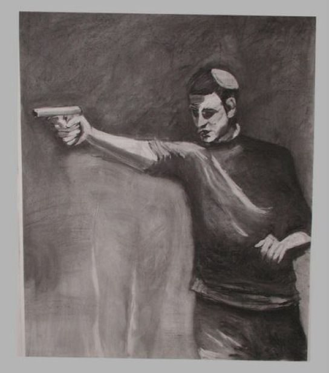

עבודת גמר בתקשורת חזותית
"מריונטה"
הפקולטה לטכנולוגיות למידה, המכון הטכנולוגי חולון 2017
במסגרת פרויקט סיום של קורס מבוא לתקשורת חזותית,
התבקשנו ליצור ייצוג ויזואלי חדש ליצירה קיימת שנבחר.
בחרנו בציור של חנן שלונסקי "רודף שלום"
התבקשנו ליצור ייצוג ויזואלי חדש ליצירה קיימת שנבחר.
בחרנו בציור של חנן שלונסקי "רודף שלום"

לחץ על התמונה להגדלה
בעזרת שפה ויזואלית דומה ניסינו לעביר מסר דומה אך אחר.
המסר שניסינו לעביר הוא שדברים ודעות בניו-מדיה יכולים לגרום
ליציאה לפעולה אמיתית אם זה רצח רבין או כל פעולת שנאה אחרת.
_______________________________________________________________
בעזרת שפה ויזואלית דומה ניסינו לעביר מסר דומה אך אחר.
המסר שניסינו לעביר הוא שדברים ודעות בניו-מדיה יכולים לגרום
ליציאה לפעולה אמיתית אם זה רצח רבין או כל פעולת שנאה אחרת.
_______________________________________________________________